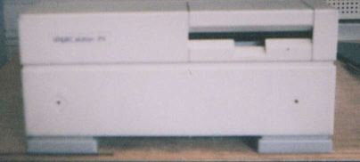

Sun SparcStation IPX 改造について

Sun Sparc Station IPX は小型のワークステーションで、昔は高価なものだったのでしょうが、数年前にごみ同様の値段で売られているのを見つけて、好奇心にかられて買ってしまいました。調べてゆくと、Sunのワークステーションは、DOS/VやMACと違って、専用のモニター、キーボード、マウスが必要で、内部のメモリーも専用のもので、また、BIOSが電池といっしょにパックされており、電池が切れるとBIOSが消えてしまう、ということもわかってきました。UNIXを使いたいのであれば、他の方法がいくらでもあるし、SparcStation
IPを復元するのは私には、ハードルが高すぎるので、ケースだけ残して、捨ててしまいました。そのケースを良く見ると、小型のMACが、うまく収まりそうな感じがするので、LCIIIのロジックボードと電源を入れてみました。電源コンセントやその他のコネクタの位置が違いますので、半田付けや、ケースのバックパネル部分の加工が必要になります。
表面から見るとSparcStation、中身はLCIIIの状態で、しばらく使いましたが、LC475 のロジックボードが手に入ったので、交換してあります。このLC475もGABEZING ROOMの情報によって、ロジックボード上のチップ抵抗を移動して、３３MHｚで動作するように改造してあります。この方法は、「DOPING MAC」という本にも詳しく紹介されいます。
68Kマッキントッシュのページに戻る